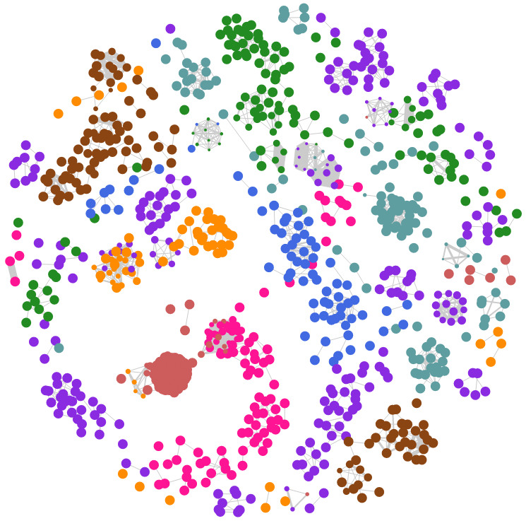

Home
Publication
Download
Learning from Multiple Sources for Video Summarisation
IJCV'15, ICCV'13
Raw Video -
Massive & Unstructured
Semantic Data Structure Visualisation
 Multi-Source Clustering Random Forest
k-means
Event-Based Video Summary -
Compact & Structured